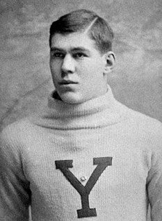

历史上的今天

历史上的今天
历史上的今天：卡尔森金奈挑落阿南德，登顶国象世界棋王宝座
22岁的挪威特级大师在第10局以6.5比3.5的总比分锁定胜局，斩获个人首个无可争议的世界冠军头衔。

历史上的今天
历史上的今天｜2022年卡塔尔世界杯启幕：中东足球翻开历史新篇
恩纳·瓦伦西亚揭幕战梅开二度，开启为期29天的冬季足球盛宴，最终见证创纪录的172粒进球与阿根廷三星加冕。

历史上的今天
历史上的今天（2005年）：澳大利亚苦等31年，点球大战击败乌拉圭重返世界杯
在澳大利亚体育场，袋鼠军团在惊心动魄的点球大战中淘汰乌拉圭，昂首挺进2006年德国世界杯。

历史上的今天
体坛历史上的今天：2010年维特尔首夺F1世界冠军，创下最年轻总冠军纪录
红牛车队的德国新星在阿布扎比大奖赛加冕车手总冠军，由此开启了车队为期四年的统治时代。

历史上的今天
500美元的豪赌：帕奇·赫弗芬格如何成为美式橄榄球历史上首位职业球员
1892年11月12日，宾夕法尼亚州的一场秘密交易，永远改变了美国体育的版图。

历史上的今天
体坛纯洁性的分水岭：世界反兴奋剂机构在洛桑诞生
这个成立于1999年11月10日的国际组织，将各国政府与奥林匹克运动紧密联结，共同捍卫体育赛事的公正底线。

历史上的今天
“牧师之拳”：45岁的乔治·福尔曼重夺重量级拳王
1994年的今天，乔治·福尔曼在拉斯维加斯第十回合击倒保持不败的迈克尔·穆勒，成为史上最年长的重量级世界拳王。